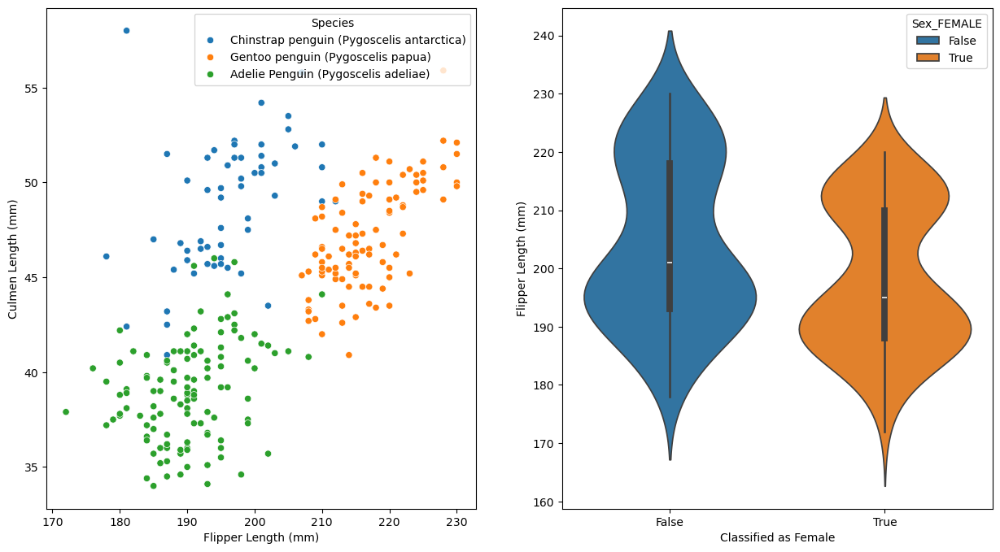
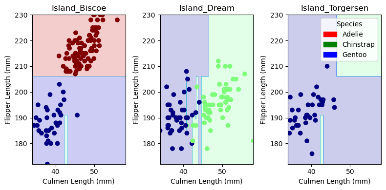
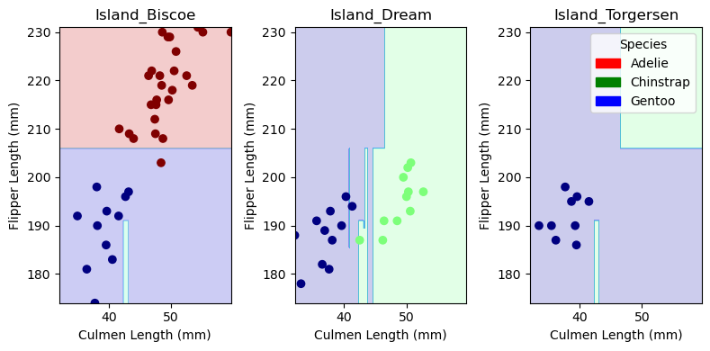
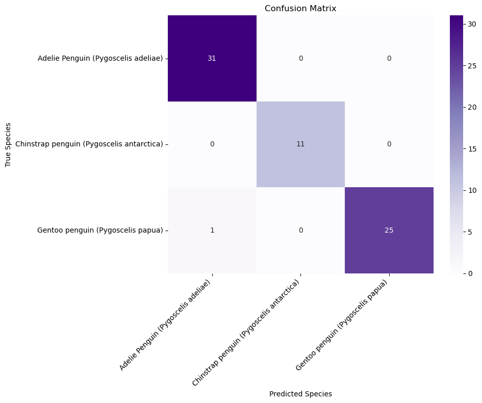

This blog post explores the Palmer Penguins dataset to develop a classification model that can identify penguin species based on their characteristics.
Author
Andrew Dean
Published
February 19, 2025
Abstract
In this analysis, I explore the Palmer Penguins dataset to develop a classification model that can identify penguin species based on their physical characteristics. Using a decision tree classifier with carefully selected features including culmen length, flipper length, and island location, I achieved high accuracy in distinguishing between Adelie, Chinstrap, and Gentoo penguins. Through exploratory data analysis and feature selection, I identified the most important predictors and optimized the model’s depth parameter. The final model achieved excellent performance on the test set, with only one misclassification out of all test cases - a Gentoo penguin incorrectly identified as an Adelie. This demonstrates that penguin species can be reliably classified using a small set of physical measurements and location data.
Data
We start by importing the Palmer Penguins dataset. Take a look at the first few rows to begin to understand the data.
Code
# Importing the Palmer Penguins datasetimport pandas as pdtrain_url ="https://raw.githubusercontent.com/PhilChodrow/ml-notes/main/data/palmer-penguins/train.csv"train = pd.read_csv(train_url)train.head()
studyName
Sample Number
Species
Region
Island
Stage
Individual ID
Clutch Completion
Date Egg
Culmen Length (mm)
Culmen Depth (mm)
Flipper Length (mm)
Body Mass (g)
Sex
Delta 15 N (o/oo)
Delta 13 C (o/oo)
Comments
0
PAL0809
31
Chinstrap penguin (Pygoscelis antarctica)
Anvers
Dream
Adult, 1 Egg Stage
N63A1
Yes
11/24/08
40.9
16.6
187.0
3200.0
FEMALE
9.08458
-24.54903
NaN
1
PAL0809
41
Chinstrap penguin (Pygoscelis antarctica)
Anvers
Dream
Adult, 1 Egg Stage
N74A1
Yes
11/24/08
49.0
19.5
210.0
3950.0
MALE
9.53262
-24.66867
NaN
2
PAL0708
4
Gentoo penguin (Pygoscelis papua)
Anvers
Biscoe
Adult, 1 Egg Stage
N32A2
Yes
11/27/07
50.0
15.2
218.0
5700.0
MALE
8.25540
-25.40075
NaN
3
PAL0708
15
Gentoo penguin (Pygoscelis papua)
Anvers
Biscoe
Adult, 1 Egg Stage
N38A1
Yes
12/3/07
45.8
14.6
210.0
4200.0
FEMALE
7.79958
-25.62618
NaN
4
PAL0809
34
Chinstrap penguin (Pygoscelis antarctica)
Anvers
Dream
Adult, 1 Egg Stage
N65A2
Yes
11/24/08
51.0
18.8
203.0
4100.0
MALE
9.23196
-24.17282
NaN
Data Manipulation
Data preparation is essential. Some steps that we took here are: 1. Dropping the columns that are not relevant to our analysis, and then drop any rows that contain missing values. 2. Converting the species labels into a numerical format that can be used by the model. 3. Converting the categorical features into dummy variables. Now take a look at the first few rows of the transformed data.
Now that we have the data in a usable format, I started to explore the various features and their relationships. The goal of this is to guage which features might be best to use for our model.
Code
## Explore# 2 interesting visualizationsfrom matplotlib import pyplot as pltimport seaborn as snsfig, axes = plt.subplots(1, 2, figsize=(15, 8))# 1. Distribution of Culmen Length by Speciesp1 = sns.scatterplot(x ="Flipper Length (mm)", y ="Culmen Length (mm)", hue ="Species", data = train, ax = axes[0])# 2. Spread of Flipper Length by Sexp2 = sns.violinplot(x ="Sex_FEMALE", y ="Flipper Length (mm)", hue ="Sex_FEMALE", data = X_train, ax = axes[1])p2.set_xlabel("Classified as Female")plt.show()

Figure 1 & 2.
Above I’ve created two visualizations to explore the data. The first shows the relationship between flipper length and culmen length for each species. The second shows the distribution of flipper length for each sex. I created the first plot because I was curious whether 1 physical characteristic might help predict the magnitude of another (ie, if a penguin has a larger flipper, does it tend to have a larger culmen?). Second, I wanted to look at the distrubutions of a physical characteristic by sex. Based on the violin plot, there is lots of overlap in flipper length between males and females, which helps us rule out sex as potential leading predictor of flipper length. And, further, this fact can likely be spread to other physical characteristics, meaning sex might not help us predict physical characteristics (and thus species) at all.
Code
# Summary Table: compute the average or median value of some features, by grouptrain.groupby("Species").aggregate({"Body Mass (g)": ["mean", "std"], "Culmen Length (mm)": ["mean", "std"], "Culmen Depth (mm)": ["mean", "std"], "Flipper Length (mm)": ["mean", "std"]}).round(2)
Body Mass (g)
Culmen Length (mm)
Culmen Depth (mm)
Flipper Length (mm)
mean
std
mean
std
mean
std
mean
std
Species
Adelie Penguin (Pygoscelis adeliae)
3718.49
462.66
38.97
2.64
18.41
1.22
190.08
6.69
Chinstrap penguin (Pygoscelis antarctica)
3743.42
407.42
48.83
3.45
18.37
1.14
196.00
7.42
Gentoo penguin (Pygoscelis papua)
5039.95
498.86
47.07
2.74
14.91
1.00
216.75
5.93
Table 1.
Here I’ve created a summary table that shows the average and standard deviation of body mass, culmen length, culmen depth, and flipper length for each species. This helps us become aquainted with the magnitude of our data and its distribution. Looking at the standard deviations, we can see that the relative spread of each respective characteristic is similar across species. And, right off the bat, there is not a clear unique physical characteristic that can be used to identify each species. The Gentoo penguin does quite largely have the largest body mass, but then has a similar culmen length to the Chinstrap penguin. This is important to note because it suggests that we will need to utilize multiple physical characteristics to accurately predict species.
Feature Selection
Feature selection is likely the most imporant step in this analysis, as the entirety of our model’s performance will depend on the predictive power of our features. Below I use the SelectKBest algorithm to select the top 2 quantitative features and the top qualitative feature.
Code
## Featuresfrom sklearn.feature_selection import SelectKBestfrom sklearn.feature_selection import f_classif# Separate qualitataive and quantitative featuresqualitative_features = ["Sex_FEMALE", "Sex_MALE", "Island_Biscoe", "Island_Dream", "Island_Torgersen", "Stage_Adult, 1 Egg Stage", "Clutch Completion_No", "Clutch Completion_Yes"]quantitative_features = [col for col in X_train.columns if col notin qualitative_features]# Select 2 quantitative featuresquant_selector = SelectKBest(f_classif, k =2)X_train_quant = X_train[quantitative_features]quant_selector.fit(X_train_quant, y_train)X_new_train = quant_selector.transform(X_train_quant)selected_quant_features = X_train_quant.columns[quant_selector.get_support()]# Select 1 qualitataive featuresqual_selector = SelectKBest(f_classif, k =3)X_train_qual = X_train[qualitative_features]qual_selector.fit(X_train_qual, y_train)X_new_train = qual_selector.transform(X_train_qual)selected_qual_feature = X_train_qual.columns[qual_selector.get_support()]# Combine selected quantitative and qualitative featuresfinal_features =list(selected_quant_features) +list(selected_qual_feature)X_new_train = X_train[final_features]print(X_new_train.head(3))# Top 3 features are Culmen Length (mm) Flipper Length (mm) and Island.
I use DecisionTreeClassifier to create a baseline model. I utilize the top 3 features that we selected above to train the model and then evaluate its performance on the training set. We achieve 100% accuracy.
Code
# Initial model with top 3 features. Reached 100% accuracy on training set.from sklearn.tree import DecisionTreeClassifierdt_classifier = DecisionTreeClassifier(random_state =42)dt_classifier.fit(X_new_train, y_train)train_accuracy = dt_classifier.score(X_new_train, y_train)print(f"Training Accuracy: {train_accuracy:.3f}")
Training Accuracy: 1.000
Model Optimization
Now I utilize the max_depth parameter to see if we can improve by finding the optimal depth. I use cross-validation to evaluate the performance of the model at each depth. We find that the optimal depth is 7, and this optimized model also achieves 100% accuracy on the training set.
Code
# Now to utilize the max_depth parameter to see if we can improve by finding the optimal depthfrom sklearn.model_selection import cross_val_scoreimport numpy as nppotential_depths =range(1, 31)mean_scores = []for depth in potential_depths: classifier_instance = DecisionTreeClassifier(max_depth = depth, random_state =42) scores = cross_val_score(classifier_instance, X_new_train, y_train, cv =5) mean_scores.append(scores.mean())optimal_depth = potential_depths[np.argmax(mean_scores)]print(f"Optimal Depth: {optimal_depth}")# Train new model with optimal depthdt_classifier_optimal = DecisionTreeClassifier(max_depth = optimal_depth, random_state =42)dt_classifier_optimal.fit(X_new_train, y_train)train_accuracy_optimal = dt_classifier_optimal.score(X_new_train, y_train)print(f"Training Accuracy with Optimal Depth: {train_accuracy_optimal:.3f}")
Optimal Depth: 7
Training Accuracy with Optimal Depth: 1.000
Model Evaluation
Now we evaluate the performance of our model on the test set. We achieve 98.5% accuracy, missing only 1 penguin.
Code
# Test modeltest_url ="https://raw.githubusercontent.com/PhilChodrow/ml-notes/main/data/palmer-penguins/test.csv"test = pd.read_csv(test_url)X_test, y_test = prepare_data(test)X_test_new = X_test[final_features] # Use the same features selected for trainingtest_accuracy = dt_classifier_optimal.score(X_test_new, y_test)print(f"Test Accuracy: {test_accuracy:.3f}")
Test Accuracy: 0.985
Code
from matplotlib import pyplot as pltimport numpy as npfrom matplotlib.patches import Patchdef plot_regions(model, X, y): x0 = X[X.columns[0]] x1 = X[X.columns[1]] qual_features = X.columns[2:] fig, axarr = plt.subplots(1, len(qual_features), figsize = (8, 4))# create a grid grid_x = np.linspace(x0.min(),x0.max(),501) grid_y = np.linspace(x1.min(),x1.max(),501) xx, yy = np.meshgrid(grid_x, grid_y) XX = xx.ravel() YY = yy.ravel()for i inrange(len(qual_features)): XY = pd.DataFrame({ X.columns[0] : XX, X.columns[1] : YY })for j in qual_features: XY[j] =0 XY[qual_features[i]] =1 p = model.predict(XY) p = p.reshape(xx.shape)# use contour plot to visualize the predictions axarr[i].contourf(xx, yy, p, cmap ="jet", alpha =0.2, vmin =0, vmax =2) ix = X[qual_features[i]] ==1# plot the data axarr[i].scatter(x0[ix], x1[ix], c = y[ix], cmap ="jet", vmin =0, vmax =2) axarr[i].set(xlabel = X.columns[0], ylabel = X.columns[1], title = qual_features[i]) patches = []for color, spec inzip(["red", "green", "blue"], ["Adelie", "Chinstrap", "Gentoo"]): patches.append(Patch(color = color, label = spec)) plt.legend(title ="Species", handles = patches, loc ="best") plt.tight_layout()cols = ["Culmen Length (mm)", "Flipper Length (mm)", "Island_Biscoe", "Island_Dream", "Island_Torgersen"]plot_regions(dt_classifier_optimal, X_new_train, y_train)plot_regions(dt_classifier_optimal, X_test_new, y_test)


Figure 4 & 5.
These two 3 ply plots show the predictions of our model on the training and test sets. The model is able to predict the species of the penguin with high accuracy on both sets by using flipper length, culmen length, and the island location. We can see the 1 missclassified penguin in Figure 5.1, shown by the red dot in the blue region.
Error Measurement
A confusion matrix is a great way to illustrate performance, showing the number of correct and incorrect predictions for each species. I created a plot to simply show this, where the shade of the cell represents the number of penguins who were classified as that species.
Code
# Confusion Matrixfrom sklearn.metrics import confusion_matrixy_test_pred = dt_classifier_optimal.predict(X_test_new)C = confusion_matrix(y_test, y_test_pred)Cfor i inrange(3):for j inrange(3):print(f"There were {C[i,j]}{le.classes_[i]} penguin(s) who were classified as {le.classes_[j]}.")# Enjoy a nice visualization in the form of a heatmapplt.figure(figsize=(10, 8))# heatmapsns.heatmap(C, annot=True, # show numbers in cells fmt='d', # use integer format cmap='Purples', xticklabels=le.classes_, # use species names yticklabels=le.classes_)plt.title('Confusion Matrix')plt.xlabel('Predicted Species')plt.ylabel('True Species')plt.xticks(rotation=45, ha='right')plt.yticks(rotation=0)plt.tight_layout()plt.show()
There were 31 Adelie Penguin (Pygoscelis adeliae) penguin(s) who were classified as Adelie Penguin (Pygoscelis adeliae).
There were 0 Adelie Penguin (Pygoscelis adeliae) penguin(s) who were classified as Chinstrap penguin (Pygoscelis antarctica).
There were 0 Adelie Penguin (Pygoscelis adeliae) penguin(s) who were classified as Gentoo penguin (Pygoscelis papua).
There were 0 Chinstrap penguin (Pygoscelis antarctica) penguin(s) who were classified as Adelie Penguin (Pygoscelis adeliae).
There were 11 Chinstrap penguin (Pygoscelis antarctica) penguin(s) who were classified as Chinstrap penguin (Pygoscelis antarctica).
There were 0 Chinstrap penguin (Pygoscelis antarctica) penguin(s) who were classified as Gentoo penguin (Pygoscelis papua).
There were 1 Gentoo penguin (Pygoscelis papua) penguin(s) who were classified as Adelie Penguin (Pygoscelis adeliae).
There were 0 Gentoo penguin (Pygoscelis papua) penguin(s) who were classified as Chinstrap penguin (Pygoscelis antarctica).
There were 25 Gentoo penguin (Pygoscelis papua) penguin(s) who were classified as Gentoo penguin (Pygoscelis papua).

The confusion matrix is evaluated on the test set. This shows that we only got 1 prediction wrong: a Gentoo was wrongly classified as a Adelie on Island Biscoe. All other classifications were correct.
Discussion
This analysis demonstrates the effectiveness of using decision trees for penguin species classification. Through careful feature selection, we identified that just three key features - culmen length, flipper length, and island location - were sufficient to achieve nearly perfect classification accuracy. In identifying the most useful features by using the SelectKBest algorithm (2 quantitative, 1 qualitative), we were able to maximize our model efficiency and reach a high performance.
The exploratory data analysis revealed interesting patterns in penguin morphology. The scatter plots showed clear clustering of species based on physical characteristics, though with some overlap, particularly between Adelie and Chinstrap penguins. The violin plots examining sex differences in flipper length suggested that sex was not a strong predictor of physical characteristics, which helped inform our feature selection process.
Our final model achieved high accuracy, misclassifying only one Gentoo penguin as an Adelie in the test set. This single error occurred on Biscoe Island, suggesting that while location is helpful for classification, it should not be relied upon exclusively. The confusion matrix visualization clearly showed this isolated error while highlighting the model’s otherwise perfect performance.
One key aspect that I learned from this project was the importance sufficient explortion, both in feature selection and model parameter tuning. It would be easy to pick 3 features that may look promising after pre-analyis plotting, but following a precise process to truly discover which features are optimal is critical and allows us to not solely rely on the confidence of our models based on their ultimate accuracy, but also know that we chose the best possible measurements of prediction. This extends to finding the optimal depth to use in the DecisionTreeClassifier model. Discovering the best depth to use adds another layer of assurance when relying on it to make predictions.
Future work could explore whether this high accuracy holds for larger datasets or different penguin populations. Are these results externally valid? Or are the features we chose reliant on the speciifc type of penguin that we measured in this blog post?Additionally, investigating whether simpler models (like logistic regression) could achieve similar performance might be worthwhile, potentially offering more interpretable results while maintaining accuracy.